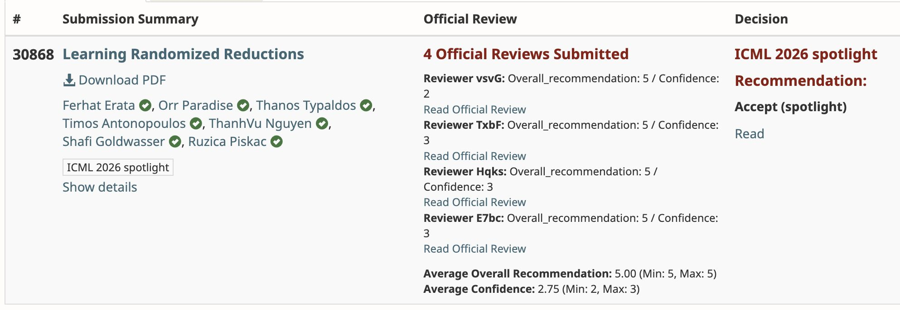

May 2026 · ICML 2026
Learning Randomized Reductions — ICML 2026 Spotlight
Learning Randomized Reductions accepted as a Spotlight paper at ICML 2026 — top 2.2% of 23,918 submissions. Joint work with Shafi Goldwasser (Turing Award, 2012) and collaborators at Yale and UC Berkeley.

Learning Randomized Reductions introduces the first machine-learning framework for automatically discovering randomized self-reductions — a concept from computational complexity theory that previously required manual derivation by cryptographers. We use learning to find, for a function f, a randomized procedure that computes f(x) by evaluating f at correlated random points instead of at x directly.
The framework has direct applications to instance hiding, hardware security (concretely, masking side-channel leakage in cryptographic code), and privacy-preserving computation. Empirically, we show that a basic polynomial-time method — linear regression — is not only sufficient but often outperforms mixed-integer linear programming and other heavyweight tools when it comes to discovering these reductions at scale.
ICML 2026 received 23,918 submissions. Of those, only 536 — about 2.2% — were selected as Spotlights. The paper received unanimous positive reviews from the program committee.
Coauthors: Orr Paradise, Thanos Typaldos, Timos Antonopoulos, ThanhVu Nguyen, Shafi Goldwasser, Ruzica Piskac.